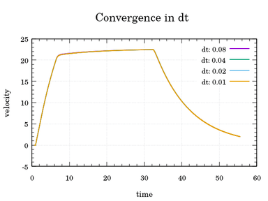
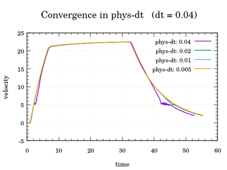
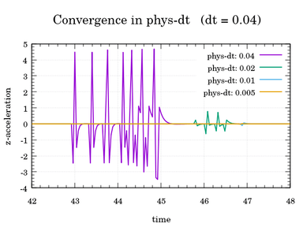

同步和时间步长¶
本节介绍 Carla 中的两个基本概念。它们的配置定义了模拟中的时间如何流逝，以及服务器如何使模拟向前推进。
模拟时间步长 ¶
实时时间和模拟时间是有区别的。模拟世界有自己的时钟和时间，由服务器执行。计算两个模拟步骤需要一些实时时间。但是，在这两个模拟时刻之间也存在时间跨度，即时间步长。
为了澄清这一点，服务器可能需要几毫秒来计算模拟的两个步骤。但是，比如这两个模拟时刻之间的时间步长可以配置始终为 1 秒。
时间步长可以是固定的，也可以是可变的，具体取决于用户的偏好。
!!! 笔记
时间步长和同步是相互交织的概念。请务必阅读这两个部分，以充分了解 Carla 的工作原理。
可变时间步长 ¶
Carla 中的默认模式。模拟时间步长是服务器计算这些步骤所需的时间。 模拟尝试去跟上实时，每次更新都会稍微调整时间步长（模拟不可重复）。
settings = world.get_settings()
settings.fixed_delta_seconds = None # 设置为可变步长
world.apply_settings(settings)
PythonAPI/util/config.py 使用参数设置时间步长。0 表示可变时间步长。
cd PythonAPI/util && python3 config.py --delta-seconds 0
固定时间步长 ¶
每个模拟步骤之间经过的时间保持恒定。如果设置为 0.5 秒，每秒将有 2 个模拟帧。使用相同的时间增量对于从模拟中获取数据是最好的方式。物理和传感器数据将对应于模拟中易于理解的时刻。此外，如果服务器速度足够快，可以在更少的实际时间内模拟更长的时间段。
在模拟中，将模拟时间与实时分离，并使用固定的时间步长可以让模拟尽可能快地运行。这样做，我们不仅能够在更短的时间内模拟更长的周期，而且还可以通过减少可变时间步长引入的浮点算术误差来获得可重复性。
可以在世界设置中设置固定的时间步长。要将模拟设置为固定时间步长为 0.05 秒，请应用以下设置。在这种情况下，模拟器将花费20 步（1/0.05）来重现模拟世界中的 1 秒。
settings = world.get_settings()
settings.fixed_delta_seconds = 0.05
world.apply_settings(settings)
PythonAPI/util/config.py 提供的脚本进行设置。
cd PythonAPI/util && python3 config.py --delta-seconds 0.05
另一种方式是指定模拟的FPS（即时间步长的倒数），例如，要以0.2秒的固定时间步长运行模拟，则执行：
cd PythonAPI/util && python3 config.py -fps=5
!!! 重要 不要将帧速率降低到 10 FPS 以下。我们的设置已调整为将物理引擎限制在最低 10 FPS。如果游戏节拍低于此值，物理引擎仍将模拟 10 FPS。在这种情况下，依赖于游戏增量时间的事物不再与物理引擎同步，参考问题 #695 。目前已启用最多 6 个物理子步骤，每个子步骤的最大增量时间为 0.016667 秒（60FPS）。因此，帧率不能低于 10 FPS。
模拟记录 ¶
Carla 具有记录器功能，可以记录模拟，然后重新播放。但是，在寻找精度时，需要考虑一些事情。
- 有了固定的时间步长，重新播放它就很容易了。服务器可以设置为与原始模拟相同的时间步长。
-
使用可变的时间步长，事情会稍微复杂一些。
-
如果服务器以可变的时间步长运行，则时间步长将与原始时间步长不同，因为逻辑周期会不时变化。然后，将使用记录的数据对信息进行插值。
- 如果服务器被迫重现完全相同的时间步长，则模拟的步长将相同，但它们之间的实时时间会发生变化。时间步长应逐一传递。这些原始时间步长是原始模拟尽可能快运行的结果。由于表示这些所需的时间大多不同，因此模拟必然会以奇怪的时间波动再现。
物理子步 ¶
为了精确计算物理效果，物理模拟必须在非常小的时间步内进行。当我们在模拟中每帧执行多次计算（例如传感器渲染，读取存储等）时，时间步长可能会成为一个问题。由于这个限制仅发生在物理模拟中，我们可以仅对物理计算应用子步。在默认情况下物理子步是打开的，并且被设定为每个时间步长fixed_delta_seconds最大 10 个物理子步(max_substeps，范围为[1,16])，每个物理子步最大为 0.01 秒(max_substep_delta_time)。
!!! 笔记
加快仿真速度需要每一帧的时间更小（才能一秒钟跑更多的帧），减少物理子步数（物理效果）+减少每个物理子步时间(max_substep_delta_time)。
当然，我们可以通过API调整这些设定：
settings = world.get_settings()
settings.substepping = True
settings.max_substep_delta_time = 0.01
settings.max_substeps = 10
world.apply_settings(settings)
注意，当设置了同步模式和固定步长时，则子步选项需要与固定增量秒fixed_delta_seconds 的值一致来保证物理模拟的准确性。（一帧所需要的时间）要满足的条件是：
fixed_delta_seconds <= max_substep_delta_time * max_substeps
注意，为了保证物理模拟的准确性，子步的时间间隔max_substep_delta_time应该至少低于 0.01666，理想情况下低于 0.01。
为了演示最佳物理子步的效果，请考虑下面的图。下面的第一个图表显示了在不同固定模拟时间步长的模拟中速度随时间的变化。物理增量时间max_substep_delta_time在所有模拟中都是恒定的，默认值为 0.01。我们可以看到，速度不受模拟时间步长差异的影响。

第二张图显示了模拟中速度随时间的变化，模拟时间步长固定为 0.04。我们可以看到，一旦物理增量时间 phys-dt(max_substep_delta_time) 超过 0.01，速度常数开始出现偏差，随着物理增量时间的增加（物理帧率降低），偏差的严重程度也在增加。

我们可以通过在测量z-加速度时显示物理增量时间与固定模拟时间步长相同的差异的影响来再次证明这种偏差，只有当物理增量时间 phys-dt(max_substep_delta_time) 为 0.01 或更小时才会发生收敛。

物理子步的详细信息请参考 虚幻引擎中的物理子步 。
客户端-服务器同步 ¶
Carla 采用客户端-服务器架构。服务器运行模拟，客户端获取信息并对世界进行修改。本节涉及客户端和服务器之间的通信。
默认情况下，Carla 以异步模式运行。服务器尽可能快地运行模拟，而不等待客户端。在同步模式下，服务器在更新到下一个模拟步骤之前会等待客户端发送的“ready to go”的消息。
!!! 笔记 同时运行多个客户端时，只能有一个客户端开启同步模式，因为服务器会对每个收到的“ready to go”信息进行反应，多个client开启同步模式将会发送过多“ready to go”信息导致同步失败。
设置同步模式 ¶
同步模式和异步模式之间切换只需要改变 settings.synchronous_mode的值即可。
settings = world.get_settings()
settings.synchronous_mode = True # 启用同步模式
world.apply_settings(settings)
如果启用了同步模式，并且正在运行交通管理器，则也必须将其设置为同步模式。阅读 [这个](adv_traffic_manager.md#synchronous-mode) 以了解如何操作。
要禁用同步模式，只需将变量设置为 false 或使用PythonAPI/util/config.py脚本。
cd PythonAPI/util && python3 config.py --no-sync # Disables synchronous mode
使用同步模式 ¶
同步模式在客户端应用程序较慢以及需要不同元素之间的同步，如传感器等情况下尤为重要。如果客户端速度太慢而服务器不等待，信息将会溢出。客户端将无法管理所有内容，信息会丢失或混淆。类似的情况是，如果有很多传感器和异步操作，将无法确定所有传感器是否在模拟中使用来自同一时刻的数据。
以下代码片段扩展了前一段代码。客户端创建一个相机传感器，将当前步骤的图像数据存储在队列中，并在从队列中检索后勾选服务器。可以在此处找到有关多个传感器的更复杂示例。
settings = world.get_settings()
settings.synchronous_mode = True
world.apply_settings(settings)
camera = world.spawn_actor(blueprint, transform)
image_queue = queue.Queue()
camera.listen(image_queue.put)
while True:
world.tick()
image = image_queue.get()
!!! 重要
来自基于GPU的传感器（主要是摄像头）的重要数据通常会延迟几帧。在这里，同步是至关重要的。
世界具有异步方法，可以让客户端等待服务器的时间步进，或在收到时执行某些操作。
# 等待下一个滴答信息并检索该节拍的快照。
world_snapshot = world.wait_for_tick()
# 注册一个回调函数，每次接收到新快照时调用它。
world.on_tick(lambda world_snapshot: do_something(world_snapshot))
可能的配置 ¶
时间步长和同步的配置，导致不同的设置。以下是对这些可能性的简要总结。
| 固定时间步长 | 可变时间步长 | |
|---|---|---|
| 同步模式 | 客户完全控制模拟及其信息。 | 不可靠模拟的风险。 |
| 异步模式 | 这是关于信息的好时间参考，服务器尽可能以最快的速度运行。 | 不容易重复的模拟。 |
- 同步模式+可变时间步长。这几乎可以肯定是一种不可取的状态。当时间步长大于 0.1 秒时，物理无法正常运行。如果服务器必须等待客户端计算步骤，则很可能会发生这种情况。模拟时间和物理特性不会同步。模拟将不可靠。
- 异步模式+可变时间步长。这是默认的 Carla 状态。客户端和服务器是异步的。模拟时间根据实时流动。重新执行模拟需要考虑浮点数算术误差，以及服务器之间时间步长的可能差异。
- 异步模式+固定时间步长。服务器将尽可能快地运行。检索到的信息将很容易与模拟中的确切时刻相关联。如果服务器速度足够快，这种配置可以以更低的实时度模拟长时间。
- 同步模式+固定时间步长。客户端将统治模拟。时间步长将是固定的。在客户端发送即时报价之前，服务器不会计算以下步骤。当同步和精度相关时，这是最佳模式。尤其是在处理缓慢的客户端或检索信息的不同元素时。
!!! 警告
在同步模式下，请始终使用固定的时间步长。如果服务器必须等待用户，并且它使用的是可变时间步长，则时间步长将太大。物理学是不可靠的。这个问题在时间步长限制部分有更好的解释。
物理确定性 ¶
Carla 在特定情况下支持物理和碰撞确定性：
- 同步模式和固定的时间步长必须启用：确定性要求客户端与服务器完全同步，以确保命令被正确应用并产生准确和可复制的结果。必须通过设置固定的时间步长来强制执行恒定的时间步长。如果不设置，时间步长将根据模拟性能在每个步骤自动计算。
- 在加载或重新加载世界之前，必须启用同步模式：如果世界从一开始就不处于同步模式，则可能会出现不同的时间戳。这可能会在物理模拟和交通信号灯等对象的生命周期中产生微小的差异。
- 每一次新的重复都必须重新加载世界：每次要重现模拟时，请重新加载世界。
- 命令应该是批处理的，而不是一次发出一个命令：虽然很少见，但在繁忙的模拟或过载的服务器中，单个发出的命令可能会丢失。如果命令在
apply_batch_sync命令中批处理，则保证该命令被执行或返回失败响应。
以下是上述步骤的示例：
client = carla.Client(HOST, PORT) # 连接到服务器
client.set_timeout(10.0)
world = client.get_world()
# 加载想要的地图
client.load_world("Town10HD_Opt")
# 设置同步模式
new_settings = world.get_settings()
new_settings.synchronous_mode = True
new_settings.fixed_delta_seconds = 0.05
world.apply_settings(new_settings)
client.reload_world(False) # 重新加载地图并保留世界设置
# 设置交通管理器
traffic_manager = client.get_trafficmanager(TM_PORT)
traffic_manager.set_synchronous_mode(True)
traffic_manager.set_random_device_seed(SEED) # 定义交通管理器以实现确定性
# 生成车辆、行人等
# 模拟循环
while True:
# 你的代码
world.tick()
播放功能的一个具体示例：
client = carla.Client(HOST, PORT) # 连接到服务器
client.set_timeout(10.0)
world = client.get_world()
# 加载想要的地图
client.load_world("Town10HD_Opt")
# 设置同步模式
new_settings = world.get_settings()
new_settings.synchronous_mode = True
new_settings.fixed_delta_seconds = 0.05
world.apply_settings(new_settings)
client.reload_world(False) # 重新加载地图并保留世界设置
client.replay_file(FILE_TO_PLAY, 0, 0, 0, False)
world.tick() # 服务器需要一个节拍信号 tick 来处理 replay_file 命令
# 仿真循环
while True:
# 你的代码
world.tick()
运行这些步骤将确保每次模拟运行的结果相同。
这就是关于模拟时间和客户端-服务器同步在 Carla 中的作用的全部信息。
打开 Carla，玩一会儿。欢迎在论坛中提出任何建议或疑问。